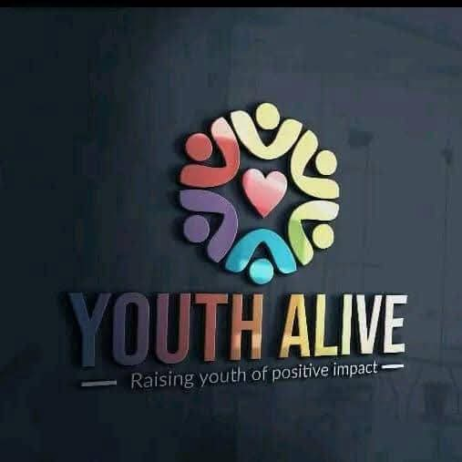

CAMSFON
I serve as the President of CAMSFON (Communication and Media Studies Fellowship of Nigeria), promoting communication excellence rooted in Christian values.
COMMUNICATOR • LEADER • AUTHOR
A communicator, leader, media strategist, author, and youth development advocate committed to inspiring meaningful change through communication, leadership, and influence.
Discover My Story Get In TouchPurpose. Leadership. Influence.
Available for bookings & collaborations
I believe that age is never a barrier to purpose and that every opportunity presents a chance to create impact, empower others, and contribute to lasting transformation. My passion lies in using my voice, ideas, and leadership to inspire growth, develop young people, and leave a positive and lasting impression on every life I encounter.
Iniubong Kingsley’s academic background in Communication Arts at the University of Uyo has helped shape his understanding of strategic communication, media practice, leadership, and public engagement. His commitment to continuous learning and professional development reflects his passion for using communication as a tool for influence, advocacy, and social transformation.
Driven by a passion for leadership and youth development, I Iniubong Kingsley is committed to inspiring positive change, empowering young people, and creating opportunities for meaningful impact. Through leadership, advocacy, and strategic engagement, I seek to amplify voices, nurture potential, and contribute to initiatives that foster community growth and social transformation. I believe that true leadership is defined not merely by positions held, but by the lasting difference made in the lives of others.
I serve as the President of CAMSFON (Communication and Media Studies Fellowship of Nigeria), promoting communication excellence rooted in Christian values.

I am also the Founder and Convener of Youth Alive Nation, a movement dedicated to raising purpose-driven young leaders.

I am also the Founder of The Skills Tribe Academy, where I equip young people with practical digital skills for personal and professional growth.
I am a digital marketer, social media strategist, content creator, graphic designer, writer, and On-Air Personality (OAP), passionate about helping brands and individuals build visibility and communicate effectively.
I am also a convener of the Content Creators Consistency Challenge (CCCC), a community empowering creators to stay consistent, grow their influence, and monetize their creativity.
My vision is to raise a generation of transformed young people through leadership, media, mentorship, digital empowerment, and the Gospel, helping them discover purpose and become solutions in their generation.
“No one is too young to create impact. We are all important pieces in life's puzzle.”
— My PhilosophyA featured piece by Iniubong Kingsley.
Read on FacebookI am the author of two inspiring books:
The Journey is a compelling story about God's calling, divine mercy, grace, friendship, and the importance of helping others.
Through the life of Samuel Jackson, the book reveals how difficult it can be to run away from God's purpose for your life. No matter how far Samuel tries to escape, he eventually discovers that God's plan cannot simply be ignored.
The story also highlights the influence of friendships and the importance of being there for others. It reminds us that the help we give today may become the very help we need tomorrow.
The Journey is more than a story. It is a reminder that God's grace can reach us even when we have wandered far from Him, and that our choices, relationships, and acts of kindness matter.
📖 Pre-order Your CopyHow does a person go from standing firmly in purity to losing everything because of a single decision?
Whispers Before the Fall by Iniubong Kingsley reveals how seemingly harmless jokes, curiosity, and little compromises can gradually lead to devastating consequences.
Sometimes, the fall doesn't begin with the act itself. It begins with a whisper we choose to entertain.
Discover the powerful message behind this book.
📖 Pre-order Your CopyThrough my writings, I challenge readers to embrace purpose, navigate life's realities, and pursue personal and spiritual growth.
Looking for someone who can bring your event to life, engage your audience, and create unforgettable moments?
I am a professional compere, available to host weddings, birthdays, corporate events, conferences, and other special occasions.
Let me bring the energy, elegance, and excellence your event deserves!
📩 Available for bookings and collaborations. Send me a DM today!
Book MeBeyond ministry, I founded The Skills Tribe Academy, where young people are equipped with practical digital skills such as graphic design, digital marketing, branding, writing, and mobile photography.
Enquire Now“Praise God. The Lord grant you more grace and faith, sir, in Jesus' name.”
“Wow more grace sir keep it up”
“Very deep
Remain blessed, sir.”
“Have learned something from your story,🙏🙏am grateful”
“God bless you sir
More grace”
“I was blessed by this piece
God bless you Sir.🥹”
“Congratulations to you sir ✨ You truly have done well in all areas including impactful gatherings that promotes moral development and standards.”
For bookings, collaborations, speaking engagements, mentorship, and enquiries, contact Iniubong Kingsley (Daddyk).